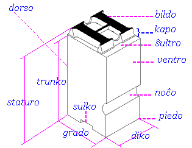
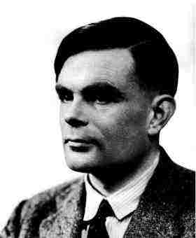

1996-02-29
Datumstrukturo en kiu la anoj (kutime, samtipaj) estas rekte atingeblaj per sia ŝlosilo. Ekz-e, en simboltabelo, la signoĉeno prezentanta nomon aŭ literalon estas taŭga ŝlosilo por atingi rikordon, priskribantan la koncernan simbolon (ĝian deklaron aŭ memoradreson). En la pliopo de programlingvoj estas facile difineblaj tabeloj kun relative negranda fiksita nombro da elementoj kies ŝlosilo havas formon de entjera indica opo — vd tabelo, sterntabelo, vertabelo.
Angle: table
Ruse: таблица
(2) tabel·o —
Speciala okazo de tabelo, disponebla en preskaŭ ĉiuj altnivelaj programlingvoj, datumstrukturo prezentanta aranĝitan aron da samtipaj elementoj; ĉiu elemento rekte atingeblas per unu aŭ pluraj indicoj. La indicoj havas finian variejon, kutime intervalon de entjera aŭ alia numerebla tipo (signa, enumeracia) kaj ĝenerale estas kalkulataj rultempe.
Ekz-e, en Paskalo oni povus difini la tabeltipojn kaj tabelvariablojn:
TIPO vektoro = TABELO [0..99] EL reela;
matrico = TABELO [1..10, 1..100] EL kompleksa;
VAR v: vektoro; M: matrico; En tiu ekzemplo reela kaj kompleksa (vd Rikordoj en Paskalo) estas la tipo de elementoj, aŭ la baza tipo de siaj respektivaj tabeloj; ĉiu vektoro (do, ankaŭ v) havas cent elementojn, numeritajn de 0 ĝis 99 (v[0], v[1], … v[99]); simile, ĉiu matrico havas mil elementojn.
Ĉiu indicvariejo estas nomata dimensio de tabelo; la vektoro estas unudimensia, kaj la matrico estas dudimensia tabelo; 0 kaj 1 estas malsupraj, aŭ subaj limoj, 99, 10, 100 estas la supraj limoj de siaj respektivaj dimensioj.
Vd vektoro, matrico; kp indichava variablo, opo.
Rim. Tabelo estas konkreta tipo, realigata per regulpaŝa ĉelaro en la ĉefmemoro; tabelo estas abstrakta datumtipo, eventuale realigebla per listo aŭ rezidanta en ekstera memoro.
Noto. Tiujn du signifojn la angla kaj la franca distingas per apartaj vortoj; sed en aliaj okazoj tia distingado ne estas farata: la artipo de Paskalo estas tre speciala subkazo de la ĝenerala nocio pri aro; simila distingado inter la abstrakta dosiero kaj la fizika datumaro (angle data set) iom post iom malaperas el la faka lingvo. En la relative neoftaj okazoj, kiam oni bezonas kontrastigi tiujn du nociojn, oni povus precizigi: abstrakta tabelo (t.e. tabelo) kaj vektoro (tabelo en tiaj konsideroj ĉiam estas unudimensia regulpaŝa koneksa memorpeco, ekz-e vd stako). Kiel montras la sperto de la pola lingvo, kie ambaŭ nocioj estas esprimataj per tablica, tia praktiko ne kaŭzas iom seriozan maloportunon. (Cetere ni iom eksperimentis kun dimensiaĵo, motivita per la ŝlosilvorto DIMENSION, uzata en FORTRAN por deklari tabelvariablojn, kaj ankaŭ per DIM en BASIC; sed «dudimensia dimensiaĵo» sonas aĉe, kaj la kolizio kun la dimensioj de la fizikaj grandoj ankaŭ estas konfuza; aranĝo estus loge proksima al la angla array, kaj fonetike, kaj sence, sed la vorto estas tro ĝenerala kaj jam tro ŝarĝita.)
Angle: array
France: tableau
Germane: Feld
Pole: tablica
Ruse: массив
1996-02-29
Malsimpla tipo kies valoroj estas tabeloj. En Paskalo:
tabeltipo =
"TABELO" "[" indictipo{"," indictipo "]"} "EL" datumtipo.
indictipo = simpla_tipo. Fakte la indictipo devas esti numerebla tipo aŭ tipnomo de numerebla tipo. La datumtipo (tiu post EL) ofte estas nomata la baza tipo de tabeltipo.
Angle: array type
Ruse: тип массива
1996-02-29
Aranĝaĵo en tajpilo (tajpila klavo), printilo aŭ ekranbloko (stirsigno kun la Askia kodono 9, ^I), servanta por movi la ĉareton, la printan kapeton aŭ la ekranan kursoron al la sekva pozicio el aro da antaŭfiksitaj pozicioj. Tiu aro da tabpozicioj kutime konsistas el la komencaj pozicioj de la zonoj de traktata dokumento (ekz-e «la markozono» — «la komandokoda zono» — «la operanda zono» de la frazoj en simbola maŝinkodo; la alinea deŝovo; la komencaj pozicioj de la vertikaloj en tabeloj ktp). Ofte tabon simbolas sago, celanta tabpozicion, proksimume →|.
En C la horizontalan tabon prezentas dusigna kombino \t.
Rim. Plej ofte temas pri horizontala movo ĝis certa surlinia pozicio (la horizontala tabo HT, Askie 9); simile, oni povas paroli ankaŭ pri antaŭfiksitaj lininumeroj en la paĝo (la vertikala tabo VT, Askie 11).
Angle: tab,
tabulator, tabulation
Ruse: табуляция, табулятор
1996-02-29
 Esperantigo de la
nomo de la plej populara serifhava tipara
familio.
Esperantigo de la
nomo de la plej populara serifhava tipara
familio.
Angle: Times type family
Ruse:
гарнитура Таймс
1999-09-10
Egallarĝa tiparo kiu similas tiparon de tajpilo; en Teĥo kaj HTML markata per tt.
Angle:
typewriter face, tt
Ruse: машинописный шрифт
2000-02-19
Sortimento da zorge elektitaj programoj por testi diversajn aspektojn de sistemfunkciado kaj per mezurado kompari samspecajn komputajn produktojn. Bona taksgarnituro kutime havas ankaŭ ĉefprogramon, kiu registras la rezultojn de la testado, skalas ilin (ekz-e laŭ la rapido de la komputilo) kaj generas raporton pri la rezultoj de la takstestado.
Estas tri specoj de takssortimentoj:
Kp testaro.
Angle: benchmark package
France: banc d'essai
Germane: Bewertungsprogramm
Ruse: эталонный
тест
1996-02-29
Takso de rendimento (de komputilo aŭ de programaro) per rulado de etalonaj komputivtestoj (tipaj programoj aŭ prilaboro de tipaj datumaroj, vd taksgarnituro).
Angle: benchmarking
Ruse: эталонное
тестирование
1996-02-29
Aranĝaĵo estiganta regulkadencan serion de ortaj impulsoj (taktoj) havantaj egalajn amplitudojn kaj egalajn daŭrojn. — Kp horloĝo.
Angle: clock, system clock
Germane: Taktgeber, Taktgenerator
Ruse:
тактовый генератор
1996-02-29
Signalo kies variejo
konsistas el du eblaj valoroj, kiujn ĝi akceptas
je egaldistancaj tempopunktoj, uzata por sinkronigo de operacioj en komputilo. La ĉefaj
karakterizaĵoj de takto estas taktodaŭro kaj
taktoperiodo  . La inverso de taktoperiodo nomiĝas
taktofrekvenco. La generadon de taktoj provizas taktilo.
. La inverso de taktoperiodo nomiĝas
taktofrekvenco. La generadon de taktoj provizas taktilo.
Angle: clock signal, clock pulse
Germane: Takt
Ruse: тактовый сигнал
1996-02-29
La inverso de taktoperiodo .
Angle: clock rate
Germane: Taktfrequenz
Ruse: тактовая
частота
1996-02-29
Kompleta ciklo de takto , entenanta unu aktivan transiron.
Angle: clock cycle
Germane: Taktperiode
1996-02-29
 La funkcio, inversa al tangento, apriore disponebla
en multaj programlingvoj. La koncernan nomon ni esperantigas per tanArk.
La funkcio, inversa al tangento, apriore disponebla
en multaj programlingvoj. La koncernan nomon ni esperantigas per tanArk.
Noto. En [Rei87] estas proponite formi la nomojn de la inversaj funkcioj per mal-, kio rezultigus «maltangento»n. La ideo pri malo ĉi tie ne estas tre evidenta, ekz-e kotangento estas la multiplika inverso de tangento:
kot x = 1/(tan x)
Angle:
arctangent, arc tangent
Ruse: арктангенс
1996-02-29
Angle: agenda
2002-12-22
Ω Programo aŭ parto de programo, kiu plenumas logike kompletan agon kaj kiu estas unuo, al kiu la operaciumo atribuas risurcojn. En iuj operaciumoj «tasko» sinonimas kun «procezo», en aliaj ĝi koincidas kun laboro.
Angle: task
Ruse:
задача
1996-02-29
En Vindozo, la plej dekstra fako de la taskostrio entenanta miniaturajn piktogramojn de diversaj taskoj normale rulataj fone, ekz-e horloĝo, klavaradaptilo por ŝaltita homlingvo, senvirusigilo ktp.
Angle: system tray
Ruse: системная
область панели задач
1999-03-21
En Vindozo, horizontala zono malsupre de la ekrano, en kiu situas la taskopleto kaj piktogramoj de ĉiuj ceteraj lanĉitaj taskoj (de aplikaĵoj).
Angle: task bar
Turke: görev çubuğu
Ruse: панель задач
1999-03-21
Plano de laboroj plenumotaj kadre de projekto, en formo de hamako prezentanta ĉiujn taskojn (laborojn, operaciojn) kaj eventojn, kun iliaj teĥnologiaj interdependoj. Kutime la verticoj prezentas la eventojn (ekz-e la enirejo respondas al la starto de la projekto, la elirejo, al ties fino); la eĝoj prezentas la taskojn, ili portas diversajn markaĵojn (taksojn de la risurcokostoj, precipe la tempotaksojn). Taskreto servas por malkovri krita(j)n vojo(j)n; realigo de la projekto neprigas precizigojn kaj ŝanĝojn de la taskreto.
Angle: activity
network, PERT network
Germane: Netzplan
Ruse: сетевой график
1996-02-29
Vd propagaĵo, provversio.
1997-08-03
Logika propozicio vera ĉe ajna valoro de siaj liberaj variabloj, ekz-e a|¬a.
Kp memkontraŭdiro.
Angle:
tautology
Ruse: тавтология
1996-02-29
 Du protokoloj:
Du protokoloj:
1996-02-29
GNU-a programaro por pretigi dokumentaron uzanta unu saman fonton por fari kaj dialogan, kaj paperan dokumentaron.
La dialoga dokumentaro havas formon de hiperteksto, legebla per Emakso aŭ aŭtonoma programo Info. La papera dokumento estas generata per Teĥo.
Teĥinfo disponeblas en ajna GNU-ejo (ekz-e ftp://ftp.gnu.org/pub/gnu/texinfo.tex). La hejmpaĝo: http://texinfo.org/.
La dissendolisto: bug-texinfo@gnu.org (abono ĉe bug-texinfo-request@gnu.org).
Noto. La aŭtoroj insistas ke en la angla nomo Texinfo oni prononcu ikson kiel [k].
Angle: Texinfo
Ruse: Техинфо
1998-12-17
Konstruada dokumento, entenanta precizajn kaj definitivajn teĥnikajn decidojn, komplete priskribanta la konstruon de la projektata produkto por la celo de ties realigo.
Teĥnika projekto entenas ĉiujn informojn, necesajn por la kodistoj, same kiel detala arkitektura desegnaĵo provizas ĉiujn informojn, necesajn por la masonistoj.
Teĥnika projekto estas rezulto de teĥnika projektado, grava stadio en la vivciklo de programaro. Kp skiza projekto.
Noto. Same kiel en la rusa kaj malsimile ol en la angla, «teĥnika projekto» ŝajnas taŭga vorto por plej diversaj inĝenieraj fakoj. Laŭ PIV1,
projekt*o … 3Dosiero pri konstruota maŝino, domo ks, entenanta ĉiujn necesajn klarigojn, desegnojn, procedojn de konstruado, kostojn ktp: projekto de ponto [Kabe].
Angle: (software) design document, SDD
Germane: Entwurf??, Feinprojekt??, Grundprojekt??
Ruse: технический проект
1997-01-06
Esperantigita nomo de TeX.
Angle: TeX
Ruse: ТеХ
1996-02-29
Portebla komputilo en formo de teko, oportuna por transportado, tiel ke ĝia uzulo povas kunhavi ĝin en vojaĝo. Tekkomputilo pezas ne pli ol 4–5 kg, havas aŭtonoman kurentfonton, klavaron, platan likvakristalan aŭ plasman ekranon, energi-nedependan memoron, ĝi estas konektebla al ekstera aparataro. Kp notbloka komputilo (praktike uzata sinonime); poŝkomputilo.
Angle: laptop computer, notebook computer
Germane: Aktentaschenrechner
1996-02-29
Mallonga formo de «Tut-Tera Teksaĵo» (TTT), oportuna por derivado (ekz-e teksestro).
Angle: Web
France: Web, Hypertoile
Ruse: Всемирная
паутина
1996-11-07
Responsulo administranta TTT-ejon.
Angle: webmaster
France: webmestre, maître de toile, gestionnaire W3
1996-11-07
Ordinara dosiero kies enhavo estas teksto. Kp duuma dosiero.
Angle: text file
Ruse: текстовый
файл
1996-02-29
Datumo kies bajtoj estas traktataj kiel kodonoj de informaj videblaj signoj (precipe literoj) kaj aranĝaj stirsignoj. Kutime teksto estas strukturita en liniojn, alineojn, paĝojn. En Paskalo teksta estas apriora tipo de la dosieroj, destinitaj por tekstotraktado. Kp dokumento.
Angle: text; document
Ruse: текст; документ
1996-02-29
Angle: text processing; word processing
Ruse: обработка текстов; подготовка
текстов
1996-02-29
Traktilo por tekstotraktado, ekz-e verkilo.
Angle: text processor, word
processor
Ruse: текстовый процессор
1996-02-29
«Aplikado de la informadiko al la telekomunikado» [SPIV].
Angle: telematics
Pole: teleinformatyka
Ruse: телематика
1996-02-29
Protokolo en la Interreto (bazita sur TCP/IP) per kiu uzanto ĉe unu komputilo povas konektiĝi
al alia, malproksima, kaj uzi la foran maŝinon samkiel lokan (defora atingo).
telnet·i — uzi telnet.
M. Weichert
1996-02-29
En forumo, sinsekvo da afiŝoj pri unu sama temo.
Normala novaĵlegilo kapablas aranĝi la
afiŝojn laŭfadene.
Angle: topic thread
Ruse:
ветка
1998-03-19
Vd ĉe tempopartigo.
Angle: time slice
France: tranche du temps
Germane: Zeitscheibe
Ruse: квант времени
1996-02-29
Ω Operaciuma reĝimo en kiu ĉiu uzanto ricevas temponojn (fiksitajn kaj relative mallongajn tempointervalojn) por plenumi sian programon. Se la procezo ne sukcesas finiĝi en la ricevita tempono, ĝi haltetas kaj atendas sian vicon kun aliaj envicigitaj procezoj. Do, ĉiuj programoj estas plenumataj laŭ pli-malpli cikla ordo (eventuale kun diversaj devioj ŝuldataj al prioritatoj ktp). Kp kvazaŭkunrulo.
Angle: time sharing
France: temps partagé
Germane: Zeitschachtelung, Zeitteilung
Ruse:
разделение времени
1996-02-29
(Logiko:) En studoj pri logikaj
sistemoj oni apartigas subarojn da bonformaj formuloj (bff-oj) estkiel speciale interesajn. Plej ofte temas
pri la aro de ĉiuj pruveblaj (deriveblaj, dedukteblaj) bff-oj (sub
iuj «sintaksaj» derivreguloj), aŭ de
ĉiuj veraj bff-oj (por iu, ofte nekonstruiva, «semantika» difino de
vereco). Tian aron da bff-oj la logikistoj nomas teorio. Kutime oni postulas,
ke teorio estu fermita pri ia aro da derivreguloj.
Angle: theory
Ruse: теория
1996-02-29
Obloprefikso uzata antaŭ unuoj por
signifi 1e12; simbole T.
En komputado la nombra valoro de tiu obloprefikso kutime estas 240 = 1024⁴ = 1 099 511 627 776, se temas pri memorkapacito; ekz-e 1 Tbajt = 1024 Gbajt.
1999-02-13
Mezurunuo de memorkapacito, 1024 aŭ 1000 gigabajtoj; mallonge Tbajt. Vd obloprefiksoj
Angle: terabyte
Ruse: терабайт, Тбайт
1996-09-26
Organo por atingi foran komputilon, al kiu lasta la terminalo estas konektita per datumtransmeta lineo. Ofte terminalo estas persona komputilo. Terminalo kapabla meme (aŭtonome) registri kaj trakti datumojn estas inteligenta terminalo.
Angle: terminal
France: terminal
Germane: Terminal, Datengerät, Datenstation
Ruse:
терминал
1996-02-29
Laŭ PIV1,
Por komputoscienco pleje aktualas la 1a signifo, pli formale difinita sub esprimo.
Ĉiu el la duope kombinitaj elementoj en la 3 propozicioj de silogismo.
Angle: term
Ruse:
терм, член
1996-02-29
Programrulo kun speciale elektitaj datumoj por malkovri erarojn de programo aŭ kontroli maleston de koncerna eraro.
Angle: testing
Ruse: тестирование
1996-02-29
Kolekto da utilaĵoj kaj testaj dosieroj (fontaj tekstoj, datumoj) por kontrola testado de koncernaj trajtoj de programa produkto. Kp taksgarnituro.
Angle: test suite
Ruse: тестовая база
(тестовый пакет; тестовый набор)
1998-03-15
Programaro por
komputilizita kompostado, kreita de D. E. Knuth kun speciala atento al fajnkvalita preparo
de presaĵoj entenantaj multe da matematikaj formuloj (tial ne estas mirinda,
ke la Usona Matematika Societo ĝin adoptis). Teĥo disponigas pli ol 50 tiparajn fasonojn kaj pli ol 900 esprimilojn por specifi la detalojn de
tekstaranĝo. Ĉi tiu Leksikono estas preparita uzante la makroopakaĵon
LaTeX, kiu estas kvazaŭ etendaĵo de Teĥo.
Notinda trajto de Teĥo estas ĝia atento al diverslingvaj diakritaĵoj. Interalie, por meti ĉapelon super ajnan literon sufiĉas meti antaŭ ĉi tiu la du signojn \^; uzante la makroojn oni povas facile adapti Teĥon al la ^c-stila prezento de la literoj de Esperanto (Pri Teĥo).
Pliaj informoj troveblas ĉe
Noto. D. Knuth insistas ke la nomon de lia sistemo, TEX, oni prononcu teĥ kaj rigardu ĝiajn literojn grekaj ĉefliteroj.
1996-02-29
Angle: thesaurus
Ruse: тезаурус
2000-09-27
Angle: jiffy, tick
1996-02-29
«Supersigno iom simila al kuŝanta S (~), kiun oni metas super la
hispana n, por doni al ĝi la sonon nj» [PIV1].
En komputoscienco tildo ofte simbolas negon. Askie: 126. En fiziko, alternan kurenton. En historiaj tabeloj, bapton.
Vd diakritilo, cirkumflekso.
Angle: tilde
Ruse: тильда, волна
1996-09-23
Garnituro de tiparoj
havantaj diversajn tiparajn gradojn, tiparajn pezojn, larĝojn kaj tiparajn fasonojn sed samkarakteran desegnon (tiparan stilon) kaj komunan nomon (la nomo kutime
estas kopirajtaĵo); ekz-e Palatino kaj Helvetica estas tiparaj
familioj.
Cetere, kelkaj «orfaj» tiparoj havas nur unu fasonon.
Angle: type family
Germane: Schriftgarnitur, Schriftfamilie
Ruse:
гарнитура
1996-02-29
Grafikaj variaĵoj de
la signobildoj en unu sama tipara familio. Normala tipara familio por Eŭropa
alfabeto disponigas almenaŭ la sekvajn
tiparajn fasonojn: magra-rekta, grasa
tiparfasono, kursivo. Krome, oni ofte havas oblikvon (iam
anstataŭ la kursivon), majuskleton, grasan kursivon.
Rim. En la tradicia presarto oni postulas, ke ĉiuj tiparaj fasonoj de unu sama familio havu ian stilan unuecon de la desegno: ronda aŭ rektlinia literkonturo, unu sama tipara kontrasto, formo de serifoj (rekta, triangula, nenia) ktp. Tiun tradician postulon ne tute atentas la Teĥa tipara familio Computer Modern, destinita por fari sciencajn tekstojn (la matematikistoj ja neniam havas sufiĉe da fasonoj).
Angle:
(type)face, style
Germane: Schriftart, Schriftschnitt
Pole: krój
Ruse: начертание
1996-02-29
 En la tradicia
presarto, la distanco inter la ventro kaj la dorso de prestipo.
En la moderna surtabla tipografio tiu difino estus sensenca, kaj oni proponis plurajn aliajn, ekz-e la sekvan:
La vertikala dimensio de tiparo, la alto de linio entenanta ĉiujn signobildojn de la tiparo (t.e. la diferenco inter la alto de la plej alta kaj la profundo de la plej profunda).
En iuj tiparoj, ekz-e en la klasika fasono de la familio Computer Modern, estas signobildoj kies vertikala dimensio egalas la tiparan gradon; tiaj estas la rondaj krampoj ().
Kutime tipara grado estas esprimata en punktoj; tamen la valoro de tiu mezurunuo varias laŭlande, kaj lastatempe plioftiĝis metrismaj indikoj en milimetroj aŭ mikrometroj.
Por la plej ofte uzataj gradoj estas tradiciaj vortaj nomoj (tiu tradicio estas ankoraŭ pli malnova ol la perpunktaj mezuroj); PIV1 registris ciceron kaj petitan.

Rim. La Anglalingvuja punkto estas malpli granda ol la kontinent-Eŭropa; tial la faktaj dimensioj de «samgradaj» tiparoj iom variis, kaj la Anglalingvuja 10a grado pli proksimas la Eŭropan «burĝan» gradon, ol la Eŭropan korpuson. Ankaŭ kp cicero/pigo. La kontinent-Eŭropan sistemon ni prezentis per la nomoj germanaj, tiuj samaj nomoj estas uzataj en la rusa (en la koncernaj landoj la 11a grado praktike ne estas uzata, tial la nomo «cicero», kiel en PIV1, estas rezervita por la 12a grado; laŭ pli tradicia nomaro la 12a grado estus [germane] «grobe Cicero» ktp). La amplekso de tipara grado estas bildigita per kvadrato, kies lateroj havas la longon, egalan al la koncerna grado; oni atentu, ke la kvadratoj estas nivelitaj laŭ sia plej profunda punkto, kiu estas levita ĝis la baza linio de la koncerna tabelhorizontalo.
Noto. La naiva «grando» estas nepreciza, ĉar ekz-e la larĝo ankaŭ estas «grando»; alto, staturo ne taŭgas, ĉar tiuj terminoj havas alian signifon en la plumba kompostado.
Angle: point size
France: (force de) corps
Germane: Kegel, Schriftgrad
Pole: stopień piśma
Ruse: кегль
1996-11-05
Atributo de tiparo, la rejŝo inter la pleja kaj la malpleja dikoj de la linioj en la signobildoj. Kutime tipara kontrasto estas
atributo de tuta tipara familio; minimuman
tiparan kontraston havas la tiparoj groteskaj (vd senserifa) kaj tajpeskaj.
Angle: contrast
Ruse: контраст
1996-02-29
Atributo de tiparo, rejŝo inter la
maksimuma linidiko en ties signobildoj kaj
la larĝo de la ensigna blanka interspaco (kp tipara kontrasto); kutime oni distingas tri
gradojn de tipara pezo: magra [PIV1], graseta [PIV1],
grasa [PIV1]. Vd grasa
tiparfasono.
Angle: weight
France: graisse
Ruse: насыщенность
1996-02-29
Grupo
de tiparaj familioj aŭ apartaj tiparoj, kreitaj surbaze de komunaj grafikaj principoj.
Noto. La vorto «stilo» en tiu termino estas rilata, interalie, al la «artaj stiloj» (kiel baroka, renesanca, klasikisma, groteska), kiuj ofte aperas en detalaj klasifikoj de tiparaj stiloj.
Angle: style, face
1996-02-29
Rim. Oni rajtas diri «tiparo» eĉ se ne temas pri fakta presado (sed, ekz-e, pri «surekranigo en la Tajmzaj tiparoj»); sufiĉas, ke oni konsideras grafikajn ecojn de signobildoj aplikante presartajn nociojn (familio, fasono, pezo, grado ktp).
Noto. La formo (liter)tipo [PIV1] estas malpli logika ol tiparo, donita en [Wel89]. «Pressignaro» estus ankoraŭ pli logika, tamen en kelkaj situacioj la pli mallonga «tiparo» pli oportunas (ekz-e en menua opcio). Ofte anstataŭ tia metonimia uzo de «tiparo» oni povas diri fasono.
Forumo pri la tiparoj estas news:comp.fonts; la respondaron vd ĉe http://www.ora.com/homepages/comp.fonts/.
Angle: font, fount
France: fonte, police de caractères
Germane: Druckschrift
Pole: czcionka
Ruse: шрифт
1997-06-01
Deklaro enkondukanta tipnomon de datumtipo. En Paskalo tipdeklaroj aperas komence de bloko, tuj post la eventuala konstantodeklara sekcio:
tipdeklaro = tipnomo "=" datumtipo.
Angle: type
definition
Ruse: определение типа
1996-02-29
Tipkontrola programlingvo, t.e. programlingvo en kiu la datumtipo de ĉiu esprimo estas determinebla dum la traduko.
Angle: (strongly) typed language
Ruse:
типизированный язык
1996-02-29
En programo, operacio transformanta valoron de unu datumtipo en la respondan valoron de alia datumtipo. Kp altipigo.
Angle: type conversion
France: conversion des types
Germane: Typumsetzung
Ruse:
преобразование типа
1996-02-29
Nomo de datumtipo. En Paskalo nur tia formo de datumtipa indiko rajtas aperi en formalparametra listo (en la ISO-a etendo, ankoraŭ konformiva tabelskemo), deklaro de okazetikedo ktp.
tipnomo = nomo.
Angle: type identifier
Ruse: идентификатор типа
1996-02-29
Angle: type
Ruse: тип; литера; шрифт
1996-02-29
Menuo kiun la uzulo povas malfermi («eltiri») per musklako ĉe ĝia titolo en la menuzono. La menuo «malfaldiĝas» tuj apude kaj malaperas post elekto de komando. Kp falmenuo.
Angle: pull-down menu
France: menu descendant
Ruse: опускающееся
меню
1996-02-29
Vd ĉiea funkcio.
Angle: total function
Ruse: всюду
определённая функция
1996-02-29
Generilo kies fontlingvo ebligas priskribon de sintakso kaj semantiko de programlingvoj (fonta kajaŭ cela — por la generata traktilo); la rezulto estas tradukilo por tiuj aliaj programlingvoj.
Angle: compiler compiler, compiler generator, translator writing
system, TWS
Ruse: система построения
трансляторов, СПТ
1996-02-29
Programo, realiganta ĵeton el unu formala lingvo en alian, precipe tiu tradukanta tekston (la fontan programon) el programada lingvo (la fonta lingvo) en ekvivalentan programon (la celprogramon) en komputila lingvo (en la cela lingvo). Plej ofte oni bezonas tradukon el pli altnivela programada lingvo en lingvon pli simplan, kvankam por kelkaj celoj (ekz-e dum erarserĉado) oni povas bezoni ankaŭ retrotradukon. Kp interpretilo.
Noto. Tre internacia estus la naturisma vorto kompilero [PIV1], al kiu multaj fakuloj donas pli asimilitan formon kompililo. Homon, kies lingvosenton ankoraŭ ne fuŝis la fakĵargono, kompililo devus pensigi pri io simila al bindilo (io kunmetanta programon el disaj moduloj, kiel oni kompilas antologion el apartaj verkoj), dum kompilero similas al peco de la kompil(aĵ)o; oni ja diras, ke «la sekva programero de la koncerto estos ario…».
Angle: compiler, translator
Ruse: транслятор, компилятор
1996-02-29
Plenumata aŭ traktata dum la programtraduko: traduktempa valoro, eraro, atributo.
Sinonomo: statika; kp rultempa, plenumo.
Angle: compile-time
Ruse: статический,
периода компиляции
1996-02-29
Angle: hit rate
France: taux de succès
Germane: Trefferquote
Ruse: коэффициент
попадания
1996-08-31
Angle: throughput
France: rendement, productivité; capacité, débit
Germane: Durchsatz
Ruse:
производительность; пропускная
способность
1996-02-29
Tia vojo en (koneksa) grafeo, ke ĝi pasas tra ĉiuj ties verticoj. Vd larĝiĝema trairo, profundiĝema trairo, arbotrairo.
Angle: traversal
France: parcours
Ruse: обход
1996-02-29
«3 ☇ Tiu zono sur son- aŭ videobendo, kiun oni utiligas por registri konservindajn signalojn per magnetofono aŭ videoregistratoro» [SPIV].
Angle: track
France: piste
Germane: Spur
Ruse: дорожка
1996-02-29
Faka sinonimo por «prilabori».
Angle: to process, handle
France: traiter
Germane: bearbeiten, verarbeiten
Ruse:
обрабатывать
1996-02-29
Programo prilaboranta datumojn de iu speciala tipo (lingvotraktilo, makrootraktilo ktp).
Angle: processor
Ruse: процессор
(2) trakt·il·o —
Parto de programo traktanta speciala(j)n situacio(j)n — ekz-e esceptojn en Ada; interrompotraktilo ktp.
Angle:
(exception) handler
Ruse: обработчик
1996-02-29
Likvakristala ekrano en kiu por vidigi la bildon estas uzata fonlumo; tia ekrano plej konvenas al uzo en situacioj kie mankas sufiĉa ekstera lumo. Kp reflekta ekrano.
Angle: transflective display
2002-09-03
Dosiero entenanta registraĵojn de transakcioj farotaj super ĉefdosiero. Post la plenumo de la transakcioj oni povas konservi la transakcian dosieron por eventuala riparo de la ĉefdosiero.
Angle:
transaction file, update file
France: fichier mouvements
1996-02-29
En datumbazo aŭ dosieradministrilo, plenumo de nedisigebla ago konsistanta el operacioj, dum kiuj la datumbazo riskas iĝi malkohera. Ekz-e kiam oni forigas datumanon oni devas ankaŭ forigi ĉiujn referencojn al ĝi. Do, por ke la datumbazo restu kohera, necesas certigi ke realiĝu aŭ ĉiom, aŭ neniom da tiuj ŝanĝoj.
Noto. «transakci·o ¤ Tuto de la konvencioj, kiuj okazas inter la komercistoj, borsistoj ks pri unu negoco, operacio ks» [PIV1].
Angle: transaction
Ruse: транзакция, обработка запроса,
выполнение целостной операции
1996-02-29
Ĵeto, speciale tiu operacianta super spacoj, funkcioj, grafeoj, programoj: optimigaj transformoj. Kp operatoro.
Angle: transformation
Ruse: преобразование
1996-02-29
Estu duloka rilato R super A;
ĝia transita fermo estas tia F⊆A×A, ke
(y ≻ x) ⇔ [y = sek(x)]
la transita fermo estas «pli granda ol» (>).
Angle: transitive closure
France: fermeture transitive
Ruse:
транзитивное замыкание
1996-02-29
Komputila reto transmetanta pakaĵojn ne nur inter siaj lokaj retnodoj, sed ankaŭ inter pluraj aliaj retoj. Kp
spino, sakreto.
Angle: transit network
1996-02-29
Vd ĉe rilato.
Angle: transitive relation
Ruse: транзитивное отношение
2000-06-12
Volumeno de datumoj transmetitaj dum tempounuo. Ekz-e ĉe legado de lumdisko la baza, unuobla (1×) transmetrapido estas 150 Kbajt/s; la kvarobla (4×) estas do 600 Kbajt/s, ktp. Kp baŭdo.
Angle: transfer rate
1997-12-31
Anstataŭigi ĉiun vertikalon per samnumera horizontalo; tiel ke el matrico M kun
la dimensioj m×n rezultas
transponaĵo MT kun la dimensioj n×m.
Angle: transpose
Germane: transponieren
Ruse:
транспонировать
1998-08-16
Parto
de la septavola etalona modelo
(vd tie).
Angle: transport layer
Ruse:
транспортный уровень
1996-02-29
En dialoga redaktilo, kopii aŭ movi apartigitan areon («eltondaĵon») de teksto aŭ bildo en la redaktilan poŝon por poste elpoŝigi ĝin aliloke en la sama aŭ en alia datumaro.
Vd musumi, enpoŝigi, kopii en la poŝon, movi en la poŝon.
Angle: cut
and paste, kill and yank
Ruse: вырезать-вставить
1999-03-03
Icego entenanta mikroprocesoron, interprocesorajn komunikilojn, sian propran ĉefmemoron (2–16 Kbajt) kaj rimedojn por atingi eksteran memoron. La vorto «transputoro» devenas el la anglaj TRANSistor + comPUTER (Esperante resp. TRANSistORO + komPUTilo); la firmao INMOS, lanĉinta la aferon, pretendis ke transputoro iĝos elementa bloko por konstruado de plurprocesoraj komputiloj de la futuraj generacioj, kiel transistoro estis baza elemento por la komputiloj de la 2a generacio.
Vd B. Gärtner. La transputoro // Fokuso. 1988. N-ro 8(4). P. 35–47.
Angle: transputer
Ruse:
транспьютер
1996-02-29
Pordo, konektita al transruĝa sentilo, ebliganta sendi (eligi) aŭ ricevi (enigi) datumojn per transruĝa kanalo, ekz-e inter poŝkomputilo kaj poŝtelefono aŭ printilo.
Angle: infrared port
Ruse: инфракрасный порт
2003-09-11
Angle: strikethrough, strikeout, cross stroke; stroke
Serba-Kroate: crtica
1996-02-29
Angle: transparency
Ruse: прозрачность
1996-02-29
Prezento de interpretata programo, konsistanta el adresoj de subprogramoj, plenumantaj la interpretajn operaciojn; ekz-e en FORTH.
Angle: threaded code
France: code filé, code à fil
Germane: gefädelter Kode, Fadenkode
Ruse: шитый
код
1998-03-19
La
supersigno ¨, ekz-e en la hispana-germana litero ü aŭ
franca-rusa ë. En la Latina-3a tremao
havas la kodonon 168.
Rim. En diversaj lingvoj la diakritilo tremao esprimas diversajn fenomenojn fonetikajn, kiaj estas dierezo [PIV1] en la greka, Latina kaj franca, aŭ umlaŭto [PIV1] en la germana, hungara kaj turka.
Angle: diæresis
France: diérèse, tréma
Germane: Umlautpunkte
Ruse: трема,
диересис
1996-02-29
Premi (kaj teni premita) musbutonon movante la mus-kursoron (kaj la subkursoran objekton) sur la ekrano.
Angle: drag
Ruse: буксировать
1996-02-29
Supra triangula matrico havas nur nulojn sub la ĉefdiagonalo; suba triangula
matrico havas nur nulojn super la ĉefdiagonalo (do, la interesaj,
nenulaj elementoj povas esti resp. nur super aŭ sub la ĉefdiagonalo).
Angle: triangular matrix
Ruse: треугольная
матрица
1998-08-18
Interpunkcia signo (…), montranta, ke la senco de la frazo ne estas komplete esprimita.En bona tipografio tripunkto aspektas iom alie ol tri sinsekvaj punktoj. Unikode la tripunkto havas la kodonon 16u2026.
Angle: dots, (horizontal) ellipsis
Ruse:
многоточие
1996-09-09
Programo kiun oni kamuflas normala utilaĵo, ekz-e ekrankurteno, dosieruja listigilo, ludo, aŭ eĉ (plej perfide!) senvirusigilo, sed kiu fakte estas destinita por rompi la sekurecon aŭ difekti ion en komputila sistemo. Vd viruso.
Angle: Trojan horse
Ruse: троянский конь
1996-02-29
Angle: overflow
Pole: nadmiar
Ruse: переполнение
1996-02-29
♖ «Kartonfolio, en normigita formato (83×187 mm), traborita por meĥanografia uzado; en ĝi informoj estas registritaj sub formo de diverslokaj truoj kaj ĝi estas la pritraktata materialo de la elektraj aŭ elektronaj komputeroj» [PIV1].
Trukartoj estis vaste uzataj ĝis la komenco de 1970aj jaroj; nun la nocio havas plie historian intereson. Tamen ke ĝis nun la finisignaraj ekranoj kutime havas po 80 signejojn en siaj linioj estas heredaĵo de la IBM-aj trukartoj, kiuj havis ĝuste tian kapaciton.
Angle: punch card
Germane: Lochkarte
Ruse: перфокарта
1996-02-29
Tiu parto de prestipo kiu estas portilo de la kapo; la alto de tiu parto.
Angle: stem, shank
France: (hauteur de) moule
Ruse: ножка
1996-11-05
Normo pri konturaj
tiparoj, unue ellaborita en Apple Computer kaj poste adaptita de
Majkrosofto.
Vd la informojn ĉe http://www.microsoft.com/truetype/ kaj http://www.microsoft.com/typography/tt/tt.htm.
Angle: TrueType Format, TTF
1997-06-10
Esperantigita nomo de WWW (angle
World-Wide Web, kion oni proksimume tradukas per Tut-Tera Teksaĵo).
Noto. Charles E. Galvin, Jr. rimarkigis:
Fakte, almenaŭ se temas pri la vorto «teksaĵo,» la traduko ne estas proksimuma. Arĥaika senco de la angla vorto web estas ĝuste «teksaĵo.»Laŭ Donald Harlow, unue (1994-08-05) la tradukon Tutmonda Tekso proponis Joseph Voros, kaj samtage Manŭelo Kampanjaĥa proponis la formon Tut-Tera Tekso. Je 1994-08-13 Marko Rauhamaa subtenis la «de iu proponitan» formon Tut-Tera Teksaĵo.
Ŝajnas, ke ankaŭ Interlingvao adoptis similan nomon (le tela transterrestre).
Angle: WWW, Web
France: FEM, Forum électronique mondial
Hispane: Telaraña Mundial
Ruse: ППП,
Повсеместно Протянутая Паутина
1996-02-29
Parto de
TTT, retnodo entenanta rete
atingeblajn hipertekstojn en HTML.
Angle: Web site
Ruse:
узел в Паутине, сайт
1997-08-02
2001-05-22
Kolekto de TTT-paĝoj prezentanta teman unuecon, ekz-e ĉiuj
TTT-paĝoj de iu individuo. Kutime TTT-paĝaro havas sian hejmpaĝon.
Rim. Oni ofte uzas samsence «TTT-ejo de NN», kvankam unu TTT-ejo povas enteni paĝarojn diverstemajn kaj diverspersonajn.
2001-05-22
Logika parto
de hiperteksto trovebla en TTT per retadreso en la formo
URL kaj traktebla kiel unu tuto ĉe datumtransmeto,
ekz-e hejmpaĝo.
Angle: Web page
Ruse: страничка в Интернете
1999-10-30
Rim. La du signifoj apartenas al disaj kampoj, kaj ilia kolizio malprobablas.
Angle: successor, next, Succ
Ruse:
преемник, След
1996-02-29

Abstrakta aŭtomato difinita de la Brita matematikisto
A. M. Turing (1912–54). Turinga aŭtomato kapablas legi kaj skribi
datumojn plenumante sekvencan traktadon. La koncepto de Turinga aŭtomato
respondas al la plej malsupra nivelo ĝis kiu oni povas redukti la funkciadon
de komputilo. Do, komputilo ne povas komputi funkcion por kiu ne ekzistas ekvivalenta Turinga
aŭtomato (la Ĉurĉa tezo). La koncepto
de Turinga aŭtomato kondukis al multaj gravaj rezultoj en la teorio de algoritmoj.
Angle: Turing machine
Ruse: машина
Тьюринга
1996-02-29
En Paskalo, sintaksa nocio uzata en la difino de variablo; variablo indikita per sia nomo (kontraste al subvariablo):
tuta_variablo = nomo.
Angle: entire variable
Ruse: полная переменная
1996-02-29
Angle: full screen
Ruse: во весь экран
2001-06-14
 Misuzo anstataŭ
Misuzo anstataŭ